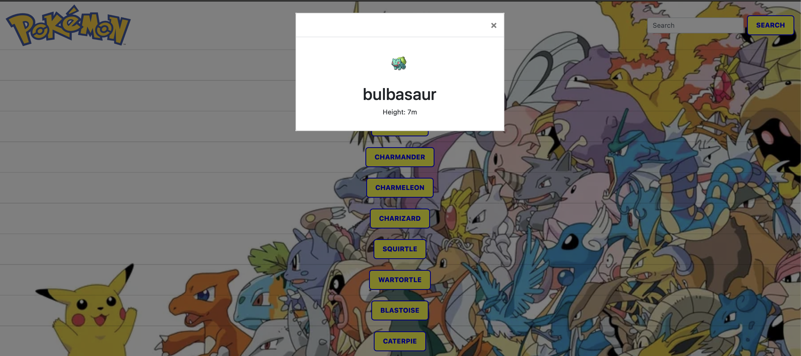

Pokédex Project
Project Overview
The Pokédex application is a dynamic, client-side web application that provides users with information about different Pokémon. Leveraging the external PokéAPI This app presents a user-friendly interface where users can browse through a list of 150 Pokémon and view detailed information about each one.
This project showcases my ability to create compelling, responsive web applications that interact with external APIs. It demonstrates my proficiency in HTML, CSS, JavaScript, and various libraries and frameworks including Bootstrap and jQuery.
Project Goals
- Create a responsive, user-friendly application that works across all devices
- Implement effective data loading from an external API
- Develop a clean, intuitive UI that responds to user interaction
- Implement search functionality to easily find specific Pokémon
- Practice modern JavaScript techniques including IIFE pattern and promises
Technical Details
Tools & Technologies Used
API Integration
The application integrates with the PokéAPI to fetch data about 150 different Pokémon. I implemented an IIFE (Immediately Invoked Function Expression) pattern to create a repository that manages the data fetching, processing, and display of Pokémon information.
Key Code Implementation
let pokemonRepository = (function () {
let pokemonList = [];
let apiUrl = 'https://pokeapi.co/api/v2/pokemon/?limit=150';
function getAll() {
return pokemonList;
}
function showModal(pokemon) {
const modalBody = $(".modal-body");
const modalTitle = $(".modal-title");
const modalHeader = $(".modal-header");
modalTitle.empty();
modalBody.empty();
const titleElement = document.createElement("h1");
titleElement.innerText = pokemon.name;
const contentElement = document.createElement("p");
contentElement.innerText = "Height: " + pokemon.height + "m";
const myImage = document.createElement("img");
myImage.src = pokemon.imageUrl;
modalBody.append(myImage);
modalBody.append(titleElement);
modalBody.append(contentElement);
}
function loadDetails(item) {
const url = item.detailsUrl;
return fetch(url).then(function (response) {
return response.json();
}).then(function (details) {
//Details to the item
item.imageUrl = details.sprites.front_default;
item.height = details.height;
item.types = details.types;
}).catch(function (e) {
console.error(e);
});
}
function showDetails(pokemon) {
loadDetails(pokemon).then(function () {
showModal(pokemon);
});
}
// Other functions and initialization code...
return {
getAll: getAll,
add: add,
addListItem: addListItem,
loadList: loadList,
loadDetails: loadDetails,
};
})();Search Functionality
I implemented a search feature that allows users to filter Pokémon by name, enhancing the user experience:
Search Implementation
// handle search
const handleSearch = (e) => {
e.preventDefault();
const searchInput = document.getElementById("search-input").value;
//clear pokemon list
const pokemonListContainer = document.querySelector(".pokemon-list");
pokemonListContainer.innerHTML = null;
const pokemons = [...pokemonRepository.getAll()];
pokemons.forEach((pokemon) => {
if (pokemon.name.toLowerCase().includes(searchInput.trim().toLowerCase())) {
pokemonRepository.addListItem(pokemon);
}
});
};
const searchBtn = document.getElementById("search-btn");
searchBtn.addEventListener("click", handleSearch);Design Process
The design approach for this project focused on creating a clean, intuitive interface that would be familiar to Pokémon fans while remaining accessible to new users. I implemented Bootstrap for consistent styling and responsive layout, ensuring the application looks great on both mobile and desktop devices.
Design Evolution
Initial Prototype
The first version featured a simple list of Pokémon names. Users could click on a name to view more details, but the interface was minimal.
Enhanced UI
I improved the user experience by adding Bootstrap styling to buttons and implementing a modal dialog to display Pokémon details.
Final Design
The final design incorporates search functionality, improved styling, and better responsiveness for all device sizes.
Challenges & Solutions
Challenge: API Data Handling
The PokéAPI returns complex, nested JSON objects with extensive information. Processing this data efficiently and extracting only the required information was challenging.
Solution
I implemented a two-stage data loading approach. First, I load the basic list of Pokémon with minimal information. Then, when a user selects a specific Pokémon, I fetch the detailed information just for that selection, improving performance and reducing unnecessary data transfer.
Challenge: Modal Implementation
Creating a responsive, accessible modal dialog that works well across all devices required careful attention to detail.
Solution
I leveraged Bootstrap's modal component and customized it to meet the specific needs of the application. This provided a consistent user experience while ensuring proper keyboard navigation and screen reader compatibility.
Challenge: Search Implementation
Adding a search feature that efficiently filters the Pokémon list without reloading the entire application.
Solution
I implemented a client-side search function that filters the already loaded Pokémon data, providing instant results without additional API calls. The function clears and rebuilds the Pokémon list based on the search criteria.
Outcome & Reflection
The Pokédex project successfully met all its initial goals, resulting in a fully functional, responsive web application that provides an engaging way to explore information about Pokémon. Working on this project significantly improved my skills in:
- JavaScript promise handling and asynchronous operations
- API integration and data management
- Responsive UI design with Bootstrap
- DOM manipulation with both vanilla JavaScript and jQuery
- Code organization using the IIFE pattern
Key Learnings
One of the most valuable lessons from this project was the importance of planning the application architecture before diving into coding. Creating separate modules for data handling, UI rendering, and event management made the code more maintainable and easier to debug.
Future Improvements
If I were to continue developing this application, I would consider the following enhancements:
- Implementing pagination for better performance with larger datasets
- Adding filtering options by Pokémon type or other attributes
- Creating a comparison feature to view stats of multiple Pokémon side by side
- Adding animations and more interactive elements to enrich the user experience